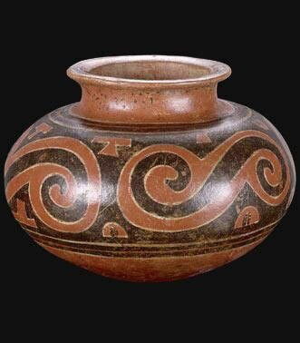
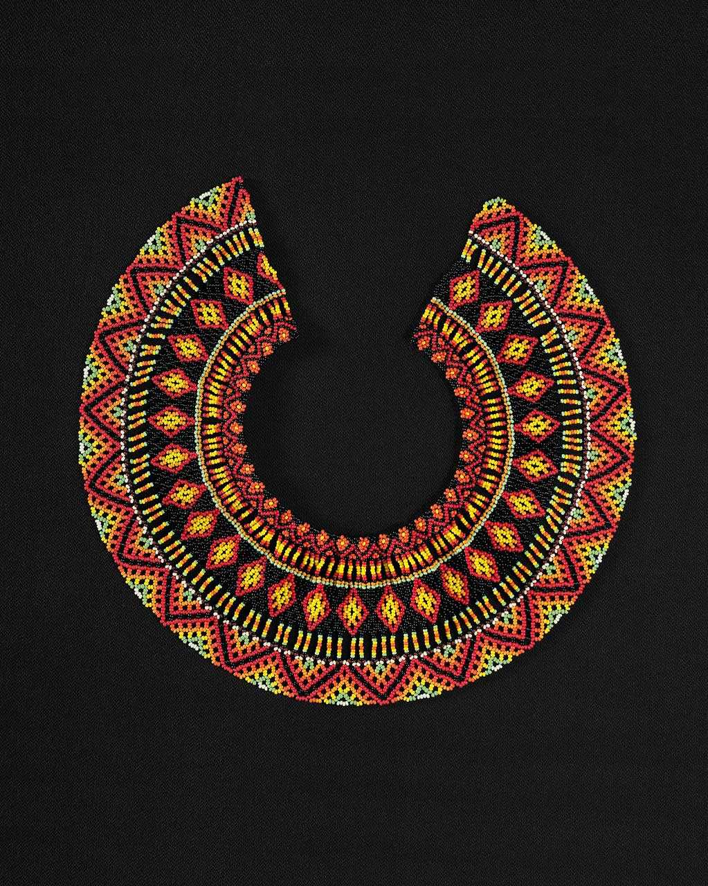
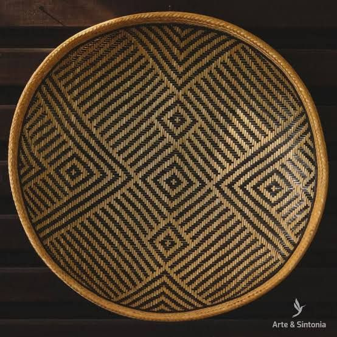

Somos un e-commerce comprometido con la preservación y difusión del arte ancestral de las comunidades indígenas de Colombia. Ofrecemos productos artesanales únicos, hechos a mano con dedicación, historia y tradición por talentosos artesanos indígenas.
Preservar y difundir la riqueza artesanal de Colombia, conectando a comunidades indígenas con el mundo a través de productos hechos a mano con tradición, pasión y comercio justo.
Ser una plataforma líder en Colombia que visibiliza la cultura indígena mediante la venta de artesanías, remedios y saberes ancestrales, generando impacto social y económico sostenible.
En Samay nos guiamos por valores fundamentales que reflejan nuestro compromiso con las comunidades indígenas. Honramos sus raíces, tradiciones y saberes ancestrales a través del respeto cultural. Promovemos el comercio justo, valorando el trabajo con pagos dignos, y fomentamos la sostenibilidad mediante prácticas que cuidan el entorno y fortalecen el desarrollo comunitario.
Desarrolladora Jr.Full Stack
Desarrolladora Jr.Full Stack
Desarrollador Jr.Full Stack
Desarrollador Jr.Full Stack
Desarrollador Jr.Full Stack